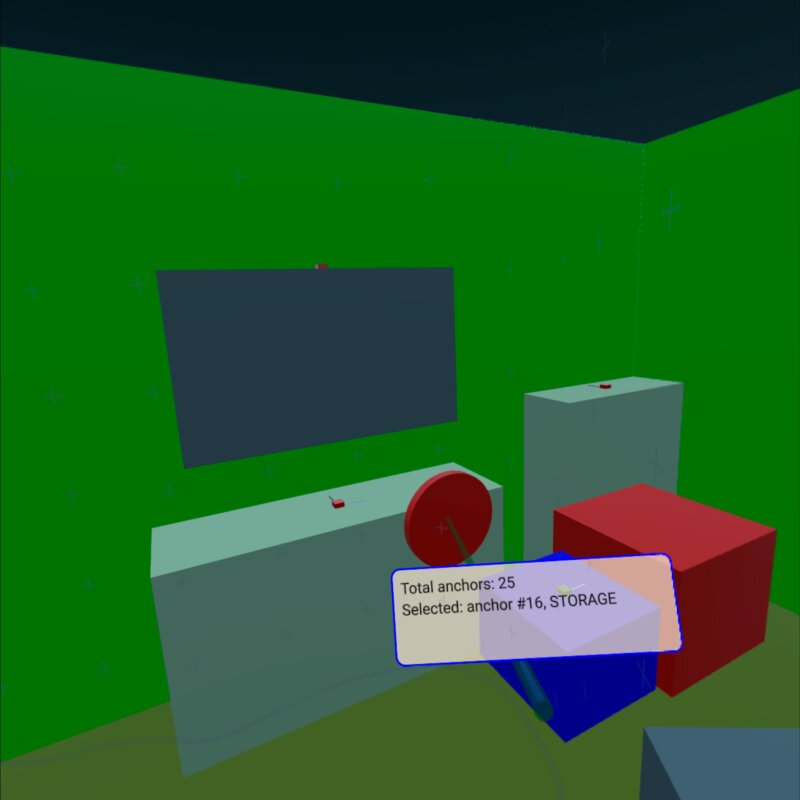

Qt Quick 3D - XR Spatial Anchors Example
Demonstrates how to use spatial anchors in Qt Quick 3D XR.

This example shows how to use XrSpatialAnchorListModel to display and interact with real physical objects in the environment. It supports both passthrough mode and fully immersive mode. The basic structure follows the xr_simple example.
The most relevant part of the example is a Repeater3D on an XrSpatialAnchorListModel. For each anchor, we create a box that fills the volume of the anchor with a color. The choice of color depends on the classification of the anchor. This box is invisible in passthrough mode. In addition, we visualize the position and orientation of the anchor with small boxes:
Repeater3D { id: spatialAnchors model: XrSpatialAnchorListModel { } delegate: Node { id: anchorNode required property XrSpatialAnchor anchor required property int index position: anchor.position rotation: anchor.rotation Model { pickable: true z: anchorNode.anchor.has3DBounds ? anchorNode.anchor.offset3D.z / 2 * 100 : 0 // Position is center of 2D surface also for 3D anchors scale: anchorNode.anchor.has3DBounds ? anchorNode.anchor.extent3D : Qt.vector3d(anchorNode.anchor.extent2D.x, anchorNode.anchor.extent2D.y, 0.01) materials: PrincipledMaterial { // Make anchor objects invisible in passthrough mode baseColor: xrView.passthroughEnabled ? Qt.rgba(0, 0, 0, 0) : anchorColor(anchor) alphaMode: xrView.passthroughEnabled ? PrincipledMaterial.Blend : PrincipledMaterial.Opaque roughness: 0.7 } source: anchorNode.anchor.has3DBounds ? "#Cube" : "#Rectangle" property string anchorInfo: "anchor #" + anchorNode.index + ", " + anchorNode.anchor.classificationString } Model { // Visualize anchor orientation materials: PrincipledMaterial { baseColor: anchorNode.anchor.has3DBounds ? anchorNode.anchor.has2DBounds ? "green" : "red" : "blue" } scale: Qt.vector3d(0.05, 0.05, 0.05) source: "#Cube" Model { materials: PrincipledMaterial { baseColor: "black" } scale: Qt.vector3d(0.1, 3, 0.1) source: "#Cube" y: 150 } Model { materials: PrincipledMaterial { baseColor: "white" } scale: Qt.vector3d(3, 0.1, 0.1) source: "#Cube" x: 150 } } visible: anchor.has2DBounds || anchor.has3DBounds } }
The box for the anchor is pickable and has a string property anchorInfo that contains the classificationString of the anchor. We then perform picking based on the controller's position. (See the xr_input example for details.) If we hit one of the anchor boxes, we show a label with the anchor information:
Node { id: labelNode position: rightController.position rotation: rightController.rotation property int numAnchors: spatialAnchors.count property string anchorInfo: "(no anchor)" Node { y: 15 x: -15 scale: Qt.vector3d(0.1, 0.1, 0.1) Rectangle { width: 300 height: 100 color: Qt.rgba(1,0.9,0.8,0.7) radius: 10 border.width: 2 border.color: "blue" Text { anchors.fill: parent anchors.margins: 10 textFormat: Text.StyledText text: "Total anchors: " + labelNode.numAnchors + "<br>" + "Selected: " + labelNode.anchorInfo } } } }